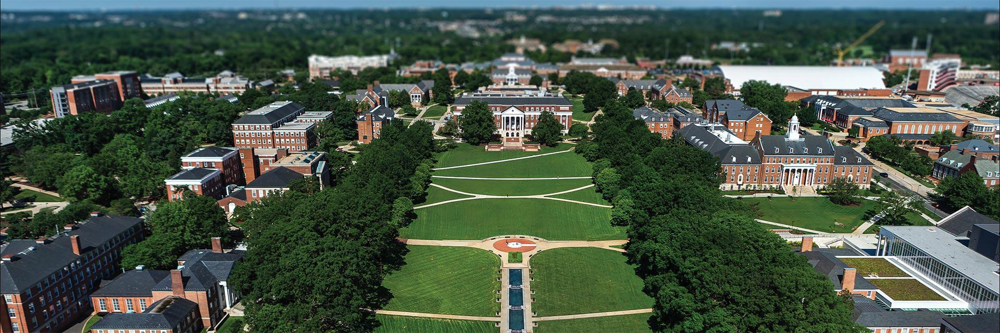

I'm currently majoring in neuroscience and chemistry at the University of Maryland. My experience in the science realm have led to learning code principles out of curiosity.
I am mainly expertise in neuroscience and chemistry related topics albeit I am continuing to learn new topics to understand the complexity of the wide fields. However, with my growing ability to integrate coding into biological & physical science, I am eager to see where the potential will lead to.
I hope this portfolio will serve as a foundation for my journey.
Check out my other projects or reach out!
